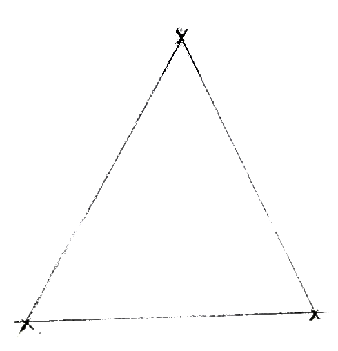

Ecrire un Game Engine
(Petit aparté) Je me dois de preciser tout d'abord que ce livre est toujours en cours d'ecriture, toujours est-il que si vous n'avez pas peur de vous perdre dans mes modifications usuelles, vous pouvez suivre ce cours (Fin aparté).
Commençons par nous mettre dans le bain avec un peu d'histoire.
Pendant de longues années, les jeux video étaient fait à partir de zero. Un simple editeur de texte acompagné d'un compileur et hop, vous codiez le jeu de votre vie ! A cette époque, les consoles de jeux video n'étaient pas très performantes donc chaque jeu devait avoir sa propre optimisation. Cependant, à partir des années 1990, avec l'arrivée de la 3D dans les jeux, leur création était de plus en plus consequante.
C'est grâce au révolutionaire Doom que l'on a commencé à parler de Game Engine. Epoustouflés par les graphismes, les modeurs se sont fait de plus en plus nombreux. Voyant la possiblité infinie de jeux pouvant être créés avec ce simple code, de grand acteurs de l'industrie des Game Engines à proprement parlé, ont commencés leurs recherches sur le sujet. Aujourd'hui, il en existe un nombre phénomenal, et pour tout type de jeux. Je ne vais pas trop m'étaler là-dessus, mais si cela vous intèrse je vous conseille la video de Sylvqin qui en parle fort bien mieux que moi.
Sommaire:
- 1. Préliminaires
- 2. La base graphique
- 2.A. La fenetre
- 2.B.1 Creer une fenetre
- 2.B.2 Recuperer un context OpenGL
- 2.B. Mise en route d'OpenGL
- 2.B.1 Effacer l'ecran
- 2.B.2 Mettre le canvas a la bonne taille
- 2.C. Premier triangle
- 2.C.1. Ecrire les Shaders
- 2.C.2. Lire les Shaders
- 2.C.3. Compiler les shaders
- 2.C.4. Creer un "program"
- 2.C.5. Rendre un triangle
1. Préliminaires
Du français "Moteur de jeu", je dirais qu'un Game Engine est un ensemble d'outils visant à simplifier le developpement d'un jeu video (même si aujourd'hui on voit de plus en plus de programes autre que des jeux utilisants des Game Engines, l'exemple qui me vient en tête est celui de Rekordbox, un programe de mixage dj). Je precise bien developpement et non selement code, les Game Engines d'aujourd'hui comme Unity, Unreal Engine ou encore Godot proposent des editeurs, ce ne sont plus que des frameworks mais bel et bien des logicels à part entiere (notons que nous commencerons par coder un frameworks avant de s'attaquer à l'editeur).
Penchons nous un peu plus sur leur conception. Un Game Engine rassemble ces trois grands piliers:
- Un moteur graphique, autrement dit l'outil qui va faire le rendu visuel sur l'ecran.
- Un moteur physique, l'outil qui va gerer les positionements et les deplacements.
- Un moteur audio, comme son nom l'indique, c'est l'outil qui va gerer les sons.
La plupart des Game Engines sont codés en C et en C++ puisque ce sont des langages compilés. Cela joue énormement sur les performantes, ce n'est pas pour rien que le C++ est le standard actuel au sein des entreprises ! Neanmoins, tout au long de ce tutoriel, j'utiliserais principalement du Typescript. Cela ne change pas grand chose, il suffit de traduire le code dans le language que vous souhetez utiliser. Mais je m'engage à donner des liens vers d'autres solutions de code quand la traduction "Typescript to C" n'est pas possible.
2. La base graphique
Dans cette partie, nous commencerons le developpement du moteur graphique. C'est une des etapes les plus difficiles alors accrochez vous bien.
2.A. La fenetre
La premiere étape dans la creation d'un Game Engine, je dirais que c'est la creation de la fenetre. En C, cela peut s'averer un peu compliqué mais vous pouvez utiliser la SFML, c'est une très bonne lib française. Toujours est-il que si vous ne voulez pas utiliser la SFML, d'autres choix s'offrent a vous comme la celebre GMFW ou encore des fonction internes a votre OS (dans ce cas la, attention à la portabilité). Vous pouvez utiliser la lib que vous voulez mais tachez à bien verifier que vous pouvez avoir un contexte OpenGL (j'en parle dans les paragraphes suivants).
En Typescript, c'est plus simple on utilise Electron ou alors dans un navigateur internet ça marche aussi (Electron est bien plus performant qu'un navigateur donc je vous conseille de l'utiliser, mais bien entendu l'un n'empeche pas l'autre). Dans les deux cas, on utilise la puissance du HTML.
Dans notre fenetre, nous allons utiliser une très vieille lib open source, OpenGL. Je suis sur que vous avez deja entendu ce nom. C'est la norme en terme de creation de rendu 3D, elle est utilisée par la plupart des Game Engines, et par concequent, la plupart des jeux video (je tiens a preciser que dans le passé les lib de rendu 3D etaient specifiques et optimisées a chaques os, Metal pour OSX, DirectX pour Windows et OpenGL pour Linux).
Ce qui est dur dans les rendus en temps reéls c'est qu'il faut calculer la couleur de 1920*1080 pixels toute les 1/60 de secondes. C'est possible grace à la carte graphique (GPU), elle est extrement rapide pour des petites taches comme des operations mathematiques simples, de plus le GPU execute des processus en parallele ce qui diminue considerablement les temps calcul pour un grand nombre de pixels (contrairement au CPU qui meme en multithreading, a moins d'avoir plusieurs coeurs, n'effectue pas de parallelisme mais de l'execution concurente).
Donc vous l'aurait compris, OpenGL est une lib qui utilise la puissance de votre carte graphique pour faire des rendus en temps reéls. Et c'est pas Genial ça ?
2.A.1 Creer une fenetre
En HTML, creer une fenetre reviens a afficher une page HTML dans un navigateur. Nous allons donc profiter de cette partie pour un tour sur la creation de notre projet.
Comme nous ecrivons une lib, nous ne devons pas donner de page html a l'utilisateur (ceci n'est pas valable si vous faite votre lib en C ou dans un autre langage que Typescript), c'est lui qui devra s'en occuper. Cependant, nous avons besoin de tester notre Engine, nous allons alors creer un dossier "Demo" dans lequel on stockera la page HTML mais aussi la classe "Main", (par convention, le nom du fichier est le nom de la classe, donc le fichier "Main.ts" contient la classe "Main").
A coté de ce dossier nous allons creer un autre dossier "Engine", celui ci sera le dossier source de la lib. Vous verrez que dans mes script, j'utilise des names spaces, cela vous montre dans quel dossier se trouve la classe. Donc si vous m'avez bien suivit, vous devrez avoir avoir un projet qui ressemble a ceci :
- Demo
- index.html
- Main.ts
- Engine
- Classe
- AudioEngine
- PhysicEngine
- RenderEngine
- ...
2.A.2 Recuperer un contexte OpenGL
En Typescript, la technique la plus efficace pour recuperer un contexte OpenGL est d'utiliser un canvas. Créons une classe "RenderEnvironment":
namespace RenderEngine
{
export class RenderEnvironment
{
private canvas: HTMLCanvasElement;
private gl: WebGL2RenderingContext
public constructor()
{
this.canvas = this.setupCanvas();
this.gl = this.setupGL(this.canvas);
}
private setupCanvas(): HTMLCanvasElement
{
// Create a canvas, display it in HTML & remove unwanted style from body.
let canvas: HTMLCanvasElement = document.createElement('canvas');
document.body.appendChild(canvas);
document.body.style.margin = "0px";
return canvas;
}
private setupGL(canvas: HTMLCanvasElement): WebGL2RenderingContext
{
// Try getting a WebGL context from the canvas.
let gl: WebGL2RenderingContext | null = canvas.getContext('webgl2');
if(!gl) throw new Error("Can't get a OpenGL context from canvas");
return gl;
}
public getCanvas(): HTMLCanvasElement
{
return this.canvas;
}
public getGL(): WebGL2RenderingContext
{
return this.gl;
}
}
}Bon, pas de panique. Comme vous pouvez le voir j'aime bien donner des gros bouts de code, mais j'explique toujours ce qu'il pourrait poser probleme. Le fonctionnement ce cette classe est tres simple. Lors de l'instance de celle-ci, un canvas est generé et est ajouté a la page HTML, ensuite grace à la methode "getContext()" de canvas, la classe reference un acces au context OpenGL (WebGL est la version Javascript & Typescript d'OpenGL). Enfin elle fini par deux getters, un pour le canvas et un autre pour le context (notons que le context OpenGL se nomme gl, c'est une convention en Typescript, nous verons la raison de cette convention un peu plus tard).
2.B. Mise en route d'OpenGL
Souvent, la premiere chose que je fais c'est de vider le contenus du canvas, c'est tres simple et ça permet de voir si OpenGL marche bien. Modifions la classe "RenderEnvironment" et creons une classe "Renderer":
2.B.1 Effacer l'ecran
namespace RenderEngine
{
export class RenderEnvironment
{
// ...
private setupGL(canvas: HTMLCanvasElement): WebGL2RenderingContext
{
// ...
// Configurate gl context
// Telling gl to clear using a black-gray color
gl.clearColor(0.09, 0.09, 0.09, 1.0);
return gl;
}
// ...
}
}La modification apportée a la methode specifie une couleur lors de l'effacement des pixels (effacement de la memoire stockant les couleurs) par la methode clear(). Bien evidement vous pouvez remplacer par la couleur que vous voulez, clearColor() attends une couleur RGBA. Cependant veillez a ce que les composantes rouge, verte, bleue et opacité soient comprises entre 0 et 1 (ici la couleur correspond a du gris extrement foncé).
namespace RenderEngine
{
export class Renderer
{
private renderEnvironment: RenderEngine.RenderEnvironment;
public constructor()
{
this.renderEnvironment = new RenderEngine.renderEnvironment();
}
private clear(gl: WebGL2RenderingContext): void
{
// Ask WebGL to clear the color buffer
gl.clear(gl.COLOR_BUFFER_BIT);
}
public render(): void
{
let gl: WebGL2RenderingContext = this.renderEnvironment.getGL();
this.clear(gl);
}
}
}La classe "Renderer" est la classe qui s'occupe de faire les rendus visuels, elle a un "renderEnvironment" et une methode publique "render()". Pour l'instant, cette methode efface simplement le contenu du canvas comme expliqué dans le paragraphe precedant. Essayez d'appler la methode "render()".
2.B.2 Mettre le canvas a la bonne taille
Un petit rectangle gris foncé apparait. C'est bien le canvas qui est effacé, cependant le canvas n'est pas de la bonne taille, il est beaucoup trop petit. Ce probleme peut etre corrigé très simplement, modifions la classe "RenderEnvironment" en ajoutant une methode "resize()":
namespace RenderEngine
{
export class RenderEnvironment
{
// ...
public constructor()
{
// ...
// Resize & start a resize event listener on the window
this.resize();
window.addEventListener('resize', this.resize.bind(this));
}
// ...
public resize(): void
{
// Copy width and height of the window to the width and height of the canvas
this.canvas.width = window.innerWidth;
this.canvas.height = window.innerHeight;
// Ask gl to resize
this.gl.viewport(0.0, 0.0, window.innerWidth, window.innerHeight);
}
// ...
}
}Et voila! Le canvas prends la taille de la fenetre lors de l'instance de la classe mais aussi lorsque la fenetre change de taille. Notons la methode viewport(), elle permet de dire a OpenGL qu'on a changé de taille, pour l'instant, on ne dessine rien donc ça ne change pas grand chose mais je la mets maintenant pour ne pas etre embêté plus tard (je reviendrais a l'explication de cette methode quand le temps sera venu).
Bon, et d'ailleur je devais vous donner une explication sur pourquoi le context OpenGL s'appele gl en Typescript. C'est parce qu'on veut que la syntaxe ressemble le plus possible a celle originale du C. En C, pour changer le viewport, il faut appeler la fonction "glViewport()", en Typescript c'est "gl.Viewport()". Ca ressemble, il y a juste un point entre. Cela vient aussi du fait que le C est un langage imperatif, il n'y a donc pas d'objets, ce sont des fonctions. Alors qu'en Typescript, il est possible de creer des classes, d'ou la methode "canvas.getContext()" renvoit un objet que l'on nomme gl.
2.C. Premier triangle
Si votre ecran est noir, c'est parfait, j'ai toujours rêvé de dire cette phrase... Bref, cette fois ci nous allons dessiner notre premier triangle. Si vous etes ici, je pense que vous le savez deja mais je prefere le rappeler; Ajourd'hui la technique la plus performantes pour modeliser de la 3D est l'utilisation de triangles (le voxel a de tres bonne performances egalement, cependant les resultats sont peu convainquants en terme de realisme).
Vous vous rappelez surment du model 3D de link dans Ocarina Of Time sur la Gamecube qui était très "polygoné". Cela vient du fait qu'a l'epoque, due au performances des consoles, le nombre de triangles pouvants etre affichés était très bas. Maintenant les temps ont bien changés, nous pouvons afficher des models 3D avec plusieurs dizaines de milions de triangle en temps reel.
En géométrie euclidienne, un triangle est une figure plane formée par trois points (merci Wikipedia). Donc notre but va etre de passer 3 points appelés vertices à OpenGL pour qu'il nous dessine un triangle. Ce procedé s'appelle la Rasterisation, OpenGL va transformer les 3 points depuis un espace 3D vers un espace 2D (notre ecran plats) en calculant quels pixels sont derriere notre triangle. Vous pouvez voir votre ecran comme une peinture, on dessine le monde sur une toile.
Pour dessiner, OpenGL a besoin de shaders, ce sont des petits programes qui tourne sur la carte graphique pour personaliser le rendu visuel. Si vous n'avait jamais entendu parlé de shaders, je vous conseil d'aller jeter un coup d'oeil au merveilleux Book Of Shaders, le livre qui m'a donné l'envie d'ecrire ce tutoriel.
La rasterisation à besoin au moins d'un vertex shader et d'un fragment shader. Je pense qu'un petit detail de ce que font ces shaders ne vous fera pas de mal:
- Vertex shader, il est executé autant de fois qu'OpenGL reçoit de vertices. Donc pour un triangle, ce shader est executé trois fois. Son travail est de positionner les vertices dans un plan 3D pour former des triangles.
- Fragment shader, il est executé pour chaque pixels dans les triangles. Donc pour un triangle de la taille d'un ecran HD, ce shader est executé (1920*1080)/2 fois, soit 1 036 800 fois. Son travail est de donner la couleur du pixel sur lequel il s'execute.
2.C.1. Ecrire les shaders
Bon assez parlé, creons deux shaders, "Default.vert" et "Default.frag", là aussi les shaders ont une entête legerement differente suivant la version d'OpenGL que vous utilisez.
#version 300 es
precision mediump float;
in vec3 vertexPosition;
void main()
{
gl_Position = vec4(vertexPosition, 1.0);
}Oui, vous avez bien remarqué, ce n'est pas du Typescript. C'est du GLSL, acronyme pour OpenGL Shader Language. Le shader que vous avez sous les yeux est un vertex shader, c'est sans aucun doute le plus basique possible.
Le mot clé "in" veux dire que le shader attend une variable d'entré, ici un vec3 qui veut dire vecteur a trois composantes, donc vecteur d'un plan 3D.
La variable globale "gl_Position" est un vec4, nous devons lui assigner la position de la vertice (vertex en anglais). C'est un vecteur a quatres composantes mais desolé de vous decevoir, ce n'est pas la dimension du temps. Il est utilisé pour simplifer les operations avec les matrices. Par convention, vec4.w == 0 signifit une direction et vec4.w == 1 signifit un point fixe dans l'espace.
Tachez egalement a toujours faire attention a la ligne "precision mediump float", elle precise que les vecteurs seront toujours construits en utilisant des nombres flotants.
#version 300 es
precision mediump float;
out vec4 fragColor;
void main()
{
fragColor = vec4(1.0, 0.0, 0.0, 1.0);
}Ce shader est un fragment shader. De la meme maniere, c'est le plus simple possible. Le mot clé "out" signifit une valeur de sortie. Par defaut OpenGL va prendre la variable avec "location = 0" comme valeur de sortie pour la couleur des pixels. C'est aussi un vec4 mais pas pour les memes raisons, ici on specifit une couleur RGBA en utilisant les composantes XYZW d'un vec4. Dans ce shader, la couleur de sortie est du rouge.
Une fois nos shaders ecrits, nous pouvons revenir au Typescript. Le but va etre de les compiler, pour ça nous avons besoin du code du shader dans une chaine de caractere. Une fois compilés, il nous faut les emboiter dans un programe OpenGL.
2.C.2. Lire les Shaders
En Typescript c'est assez dur de lire des fichiers... Mais c'est possible. La technique c'est d'envoyer une requete avec la methode GET a l'url ou se trouve notre fichier et celle-ci nous renvera le contenu de notre fichier dans la reponse.
namespace Utils
{
export class FileReader
{
public async read(path: string): Promise
{
// Use fetch to send GET requests
let response = await fetch(path);
return await response.text();
}
}
} Voici une classe permetante de lire des fichiers. Le probleme avec les requetes c'est que nous sommes obligé de faire du code asyncrone. Nous reviendrons sur ça lors de la creation d'entités.
2.C.3. Compiler les shaders
Compiler un shader est plutot simple, nous avons juste besoin d'un context gl et bien entendu du code source sous forme de chaine de caractere du shader (conf. sous partie precedante). Je pense pense que la solution la plus porpre est de creer une methode "compileShader()" dans la classe "Renderer":
namespace RenderEngine
{
export class Renderer
{
// ...
public compileShader(gl: WebGL2RenderingContext, source: string, type: number): WebGLShader
{
// Create shader object.
let shader: WebGLShader | null;
shader = gl.createShader(type);
if(!shader) throw new Error("Failed to create shader");
// Add its source & compile it.
gl.shaderSource(shader, source);
gl.compileShader(shader);
// Log possible errors.
if(!gl.getShaderParameter(shader, gl.COMPILE_STATUS))
throw new Error(`Error in ${type} ` + gl.getShaderInfoLog(shader)?.toString());
return shader;
}
// ...
}
}2.C.4. Creer un "program"
L'object "program" est l'objet final necessaire a OpenGL pour dessiner, il n'est pas compiliqué a creer non plus. Ajoutons une metode "createProgram()" a la classe "Renderer"
namespace RenderEngine
{
export class Renderer
{
// ...
public createProgram(gl: WebGL2RenderingContext, vertexShader: WebGLShader, fragmentShader: WebGLShader): WebGLProgram
{
// Create a program object.
let program: WebGLProgram | null;
program = gl.createProgram();
if(!program) throw new Error("Failed to create program");
// Attach the vertex & fragment shader, & link it to OpenGL.
gl.attachShader(program, fragmentShader);
gl.attachShader(program, vertexShader);
gl.linkProgram(program);
return program;
}
// ...
}
}2.C.5. Rendre un triangle
Nous y sommes presque! Creons une classes temporaire "Triangle"
namespace TMP
{
export class Triangle
{
private vertexShader: WebGLShader | null;
private fragmentShader: WebGLShader | null;
private program: WebGLProgram | null;
private vertexShaderSource: string;
private fragmentShaderSource: string;
public constructor(vertexShaderSource: string, fragmentShaderSource: string)
{
this.vertexShader = null;
this.fragmentShader = null;
this.program = null;
this.vertexShaderSource = vertexShaderSource;
this.fragmentShaderSource = fragmentShaderSource;
}
public render(gl: WebGL2RenderingContext, renderer: RenderEngine.Renderer)
{
// Compile shaders if its not already done.
if(!this.program)
{
this.vertexShader = renderer.compileShader(gl, this.vertexShaderSource, gl.VERTEX_SHADER);
this.fragmentShader = renderer.compileShader(gl, this.fragmentShaderSource, gl.FRAGMENT_SHADER);
this.program = renderer.createProgram(gl, this.vertexShader, this.fragmentShader);
}
// Create triangle vertices.
let verticePositions: number[];
verticePositions = [
// X Y Z
-1.0, -1.0, 0.0,
1.0, 1.0, 0.0,
0.0, 1.0, 0.0,
];
// Draw ...
}
}
}Pas de panique! Ce code parait compliqué mais il ne l'est pas dutout en realté. On initianlise le triangle avec ses shaders en tant que null, pareil pour son program. Par contre "vertexShaderSource" et "fragmentShaderSource" sont initialisés par des chaines de caracteres. Il faut bien que vous fassiez la difference entre "shader" de type "WebGLShader" et "shaderSource" de type "string", "shader" est le code du shader compilé et "shaderSource" est simplement la chaine de caractere contenant le code source du shader.
Lors du rendu du triangle, si son program est null cela signifit que les shaders n'ont pas encore été compilés, donc nous les compilons. "verticesPosition" est le tableau contenant les positions des points dans l'espace 3D que nous allons donner au vertex shader.
Vous vous rappelez du "in" dans le vertex shader? Et bien il serait temps de le remplir. Pour ce faire, nous alons devoir utiliser des buffer (memoire tampon). C'est une memoire temporaire très rapide. Il faut faire très attention avec les buffers, car ils sont la cause principale des leaks de memoire et par consequant des rallentisements. La technique est de creer un seul buffer par triangle que nous remplisons a chaque rendu. Modifions notre code:
namespace TMP
{
export class Triangle
{
private vertexShader: WebGLShader | null;
private fragmentShader: WebGLShader | null;
private program: WebGLProgram | null;
private vertexBuffer: WebGLBuffer | null;
private vertexShaderSource: string;
private fragmentShaderSource: string;
private verticePositions: Float32Array;
public constructor(vertexShaderSource: string, fragmentShaderSource: string)
{
this.vertexShader = null;
this.fragmentShader = null;
this.program = null;
this.vertexBuffer = null;
this.vertexShaderSource = vertexShaderSource;
this.fragmentShaderSource = fragmentShaderSource;
this.verticePositions = new Float32Array([
// X Y Z
-1.0, -1.0, 0.0,
1.0, 1.0, 0.0,
0.0, 1.0, 0.0,
]);
}
public render(gl: WebGL2RenderingContext, renderer: RenderEngine.Renderer)
{
// Compile shaders if its not already done.
if(!this.program)
{
this.vertexShader = renderer.compileShader(gl, this.vertexShaderSource, gl.VERTEX_SHADER);
this.fragmentShader = renderer.compileShader(gl, this.fragmentShaderSource, gl.FRAGMENT_SHADER);
this.program = renderer.createProgram(gl, this.vertexShader, this.fragmentShader);
}
// Create buffer if its not already done.
if(!this.vertexBuffer) this.vertexBuffer = gl.createBuffer();
// Draw ...
}
}
}Maintenant rajoutons une methode "sendBuffer()" a la classe "Renderer":
namespace RenderEngine
{
export class Renderer
{
// ...
public sendBuffer(gl: WebGL2RenderingContext, name: string, buffer: WebGLBuffer | null, program: WebGLProgram, iterable: Float32Array, length: number): void
{
// Update buffer data.
gl.bindBuffer(gl.ARRAY_BUFFER, buffer);
gl.bufferData(gl.ARRAY_BUFFER, iterable, gl.DYNAMIC_DRAW);
// Send buffer to vertex shader.
let location = gl.getAttribLocation(program, name);
gl.enableVertexAttribArray(location);
gl.vertexAttribPointer(location, length, gl.FLOAT, false, length * Float32Array.BYTES_PER_ELEMENT, 0);
}
// ...
}
}Je pense que ce bout de code merite un peu d'explication. Les deux premieres lignes vont s'occuper de mettre un les valeurs d'un tableau dans l'emplacement memoire dedié au buffer en argument. "DYNAMIC_DRAW" signifit que la memoire peut etre changée souvent (c'est le cas pour nous car nous modifions la memoire a chaque rendu), d'autres options sont disponibles. La seconde partie du code s'occupe d'envoyer le buffer dans le vertex shader. "name" est le nom de la variable dans le shader qui va recuper les vec-n ou n correspond a "length". Exemple, un length de 3 envera le buffer coupé tout les 3 pour former des vec3.
On peut alors ecrire les dernieres lignes dans la classe "Triangle":
namespace TMP
{
export class Triangle
{
// ...
public render(gl: WebGL2RenderingContext, renderer: RenderEngine.Renderer)
{
// ...
gl.useProgram(this.program);
renderer.sendBuffer(gl, "vertexPosition", this.vertexBuffer, this.program, this.verticePositions, 3);
gl.drawArrays(gl.TRIANGLES, 0, this.verticePositions.length/3);
}
// ...
}
}Voila! Vous pouvez maintenant dessiner un triangle. N'oubliez pas "useProgram()", le nombre de fois ou je me suis fait avoir ... "drawArrays()" est la methode finale, elle execute les shaders. "gl.TRIANGLES" specifie aux shaders de dessiner des triangles. Tout à l'heure je vous ai dit que le vertex shader s'executait autant de fois qu'il y a des vertices, mais vous pouvez le controller, le second argument specifie si vous voulez sauter des vertices (je ne vois pas bien l'intérêt mais sachez que ça existe), et le dernier est le nombre de fois que le vertex shader s'execute.
Pour tester le triangle, il faut faire un petit changement temporaire sur la classe "Renderer":
namespace RenderEngine
{
export class Renderer
{
// ...
public render(triangles: TMP.Triangle[]): void
{
// ...
for(let triangle of triangles)
{
triangle.render(gl, this);
}
}
// ...
}
}Nous avons juste à ajouter en parametre un tableau de Triangle auquel on appele "render()" pour tout ses triangles. Ce changement n'est pas vraiment temporaire puisque plus l'etape d'après est de faire la meme chose avec une classe abstraite "Renderable" a laquelle on ajoutera la possibilité de mettre les vertices que nous voulons.
Je voulais juste vous montrer avant de continuer comment utiliser le FileReader:
namespace Demo
{
export class Main
{
public constructor()
{
// Call start cause it's async.
this.start();
}
private async start()
{
let fileReader: Utils.FileReader = new Utils.FileReader();
let vertexShaderSource: string = await fileReader.read('../Shaders/Default.vert');
let fragmentShaderSource: string = await fileReader.read('../Shaders/Default.frag');
let triangle: TMP.Triangle = new TMP.Triangle(vertexShaderSource, fragmentShaderSource);
let renderer: RenderEngine.Renderer = new RenderEngine.Renderer();
renderer.render([triangle]);
}
}
new Main();
}Comme vous pouvez le voir, il suffit de creer une methode dite async c'est a dire que a chaque fois qu'une function ou methode revoit une Promise, il vous est possible d'attendre le resultat en utilisant le mot clé "await". Donc ici, "fragmentShaderSource" attends que "vertexShaderSource" soit chargé et "triangle" attends que "fragmentShaderSource" soit chargé.